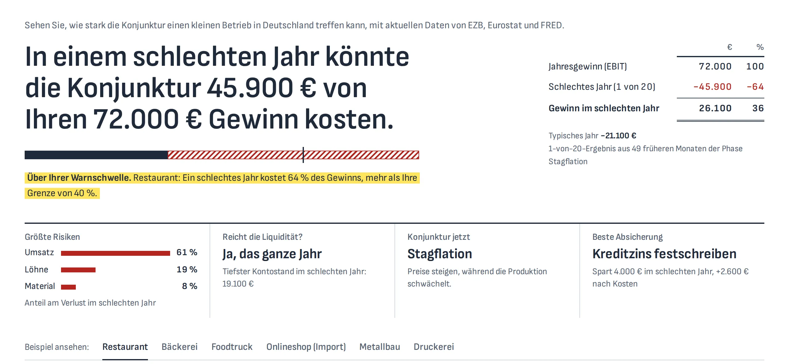
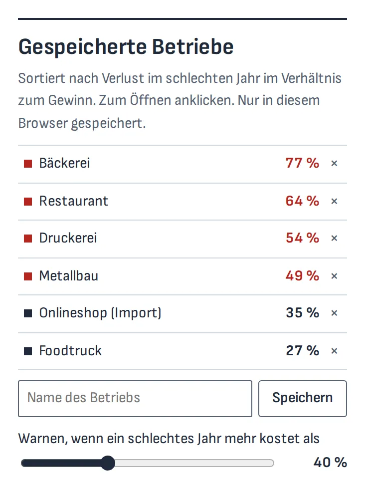
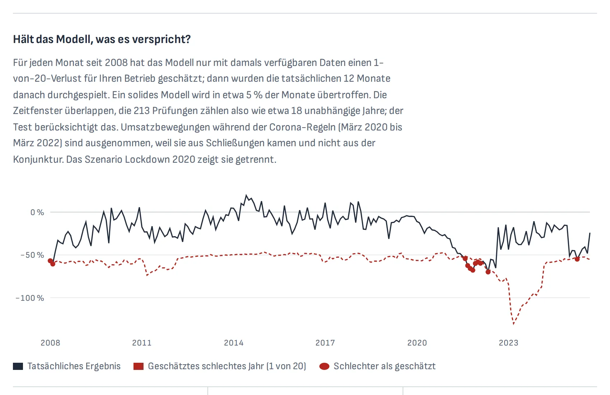

Welcher Mandant verkraftet ein schlechtes Jahr nicht?
Macro Risk Monitor liest die Summen- und Saldenliste eines Mandanten und zeigt, wie viel vom Gewinn des nächsten Jahres Energiepreise, Zinsen, Einkaufspreise und schwächere Umsätze kosten könnten. Für Steuerkanzleien und Banken: alle Mandanten sortiert, mit täglich auf Neues geprüften Daten.
| € | % | |
|---|---|---|
| Jahresgewinn (EBIT) | 72.000 | 100 |
| Schlechtes Jahr (1 von 20) | −41.700 | −58 |
| Gewinn im schlechten Jahr | 30.300 | 42 |
- Druckerei71 %
- Metallbau63 %
- Bäckerei60 %
- Restaurant58 %
- Onlineshop (Import)44 %
- Foodtruck37 %
In 60 Sekunden erklärt
Ein stummer Rundgang mit Untertiteln: die Antwort zuerst, ein DATEV-Import, frühere Krisen, Absicherung, der Assistent und alle Mandanten nach Risiko sortiert.
Untertitel zum Mitlesen
- 0:03 Die Antwort zuerst: was ein schlechtes Jahr Sie kosten könnte.
- 0:06 Dann die größten Risiken, die Liquidität und die Konjunktur heute.
- 0:10 DATEV-Saldenliste importieren. Sie bleibt in Ihrem Browser.
- 0:17 Oder mit einem von sechs Beispielbetrieben starten.
- 0:23 2008, 2011, 2020 oder den Energieschock 2022 durchspielen.
- 0:28 Sehen, welche Absicherung sich lohnt.
- 0:33 Täglich auf neue Daten von EZB, Eurostat und FRED geprüft.
- 0:36 Business-Tarif: ein KI-Assistent, der das Modell rechnet und nie rät.
- 0:46 Backtest seit 2008: in 5,2 % der Monate schlechter, Ziel 5 %.
- 0:52 Für Steuerberater und Banken: alle Mandanten nach Risiko sortiert.
Woher das Risiko im nächsten Jahr kommt
Ein Energievertrag läuft aus, ein variabler Kredit wird neu verzinst, eine Indexmiete wird angepasst, der Mindestlohn steigt. Der Abschluss zeigt das letzte Jahr, das Risiko liegt in den nächsten zwölf Monaten.
- Konjunktur jetzt
- StagflationSeit Mai 2026
- Euribor 3M
- 2,64 %Daran hängen variable Kredite
- Energiepreise
- +13,4 %Zum Vorjahr
- Mindestlohn
- 14,60 €Ab Januar 2027, bisher 13,90 €
Daten bis September 2026, von EZB, Eurostat und FRED.
So funktioniert es
Fünfzehn Minuten mit einer Mandantenakte, vom Export bis zum Gespräch.
Importieren
Die Summen- und Saldenliste aus DATEV exportieren (SKR03 oder SKR04) und hineinziehen. Die Datei verlässt den Browser nie.
Lesen
Der Verlust im schlechten Jahr, die größten Risiken, ob die Liquidität das Jahr über reicht und wann welcher Vertrag greift.
Handeln
Absicherungen vergleichen (Zins festschreiben, Energie fixieren, Preise weitergeben, Dollar sichern), ein PDF für Mandant oder Bank drucken und eine E-Mail erhalten, wenn die Konjunktur die Phase wechselt.

Gemacht für den Kanzleialltag
Alles, was der Business-Tarif zum kostenlosen Check hinzufügt.

- Alle Mandanten nach Risiko sortiertEine Liste, sortiert nach dem Anteil des Gewinns, den ein schlechtes Jahr kosten könnte, mit Ihrer Warnschwelle.
- Seit Ihrem letzten BesuchWenn neue Daten kommen, sehen Sie, wer Ihre Warnschwelle überschritten hat und wessen Risiko gestiegen ist.
- Eine monatliche Warn-E-MailDie Konjunkturphase, die wichtigen Zinsen und wie sich typische Betriebe bewegt haben, auf Deutsch und Englisch.
- Ein KI-AssistentErklärt Ergebnisse, rechnet Was-wäre-wenn mit dem Modell und entwirft Mandantennotizen. Mandantennamen verlassen den Browser nie.
- Ein PDF-BerichtZwei Seiten für das Mandantengespräch oder die Kreditakte der Bank.
- 13 SprachenFür Mandanten, die lieber Türkisch, Polnisch, Arabisch oder Ukrainisch lesen.
- Portfolio-StresstestFür Depot- und Fondsbestände: Rendite, Duration und fünf Stressszenarien.
- Keine InstallationLäuft im Browser. Kein Konto, keine Cookies, kein Tracking: Besuche werden nur anonym gezählt.
Kann man der Zahl trauen?
Das Modell wird Monat für Monat an der Geschichte getestet, nur mit den Daten, die damals öffentlich waren.
- Monate schlechter als prognostiziert
- 5,6 %Beispielrestaurant seit 2008, Ziel 5 %
- Kupiec-Test, für überlappende Jahre
- Bestandenp = 0,90
- Datenreihen
- 21EZB, Eurostat und FRED, jeweils um die Veröffentlichungsverzögerung versetzt
- Cookies und Tracker
- 0Mandantenzahlen bleiben im Browser

Methode, Backtest und Grenzen stehen in der README auf GitHub.
Preise
Geplante Preise. Solange wir Pilotprojekte durchführen, ist jeder Tarif kostenlos testbar.
Free
Für Inhaber, die schnell prüfen wollen
- Risiko im schlechten Jahr für einen Betrieb
- Die größten Risiken, nach Gewicht
- Ob die Liquidität das Jahr über reicht
- Der Energieschock 2022 als Szenario
Pro
Für Inhaber, die einen Plan wollen
- Liquidität Monat für Monat
- Alle fünf Stressszenarien
- Welche Absicherung sich lohnt
- DATEV-Import und PDF-Bericht
Business
Für Steuerkanzleien und Banken
- Alle Mandanten nach Risiko sortiert
- Warnungen und die monatliche E-Mail
- Der KI-Assistent
- Pro Kanzlei, bis 50 Mandanten
Ein kostenloses Pilotprojekt mit uns
Wir suchen drei Steuerkanzleien oder Banken für ein Pilotprojekt in diesem Winter: eine Sitzung mit einer echten Mandantenakte, danach beheben wir alles, was im Weg stand.
Wer es baut
Studierende der Angewandten Data Science und Business Analytics an der ISM München.
EidenDaten und Technik: die Datenpipeline, die Modelle, die Web-App
ChannappaFinanzen: das Risikomodell der Betriebe, die Absicherungslogik, Preise und Gespräche mit Mandanten
Fragen
Sind Mandantendaten sicher?
Mandantenzahlen werden im Browser verarbeitet und nirgends sonst gespeichert. Der KI-Assistent erhält Kürzel statt Mandantennamen, und die Warn-E-Mail kennt nur die Adresse der Abonnenten.
Woher kommen die Daten?
Euribor, Inflation und Wechselkurse von der EZB, Industrieproduktion, Einzelhandelsumsätze und Erzeugerpreise von Eurostat, Öl und US-Zinsen von FRED. Jeden Tag geprüft; neue Zahlen erscheinen kurz nach ihrer Veröffentlichung.
Was heißt „schlechtes Jahr“?
Das 1-von-20-Ergebnis für den Gewinn des nächsten Jahres. Jeder Zwölfmonatszeitraum seit 2000 wird auf den Betrieb übertragen, skaliert auf die heutige Schwankung; nur eines von zwanzig dieser Jahre fällt schlechter aus.
Welche Buchhaltung lässt sich importieren?
Eine Summen- und Saldenliste als CSV-Export aus DATEV, mit dem Kontenrahmen SKR03 oder SKR04.
Rechnet es mit Steuern?
Ja, im Pro-Plan. Weniger Gewinn heißt weniger Steuer, deshalb zeigt die Seite das schlechte Jahr nach Steuern, für Freiberufler, Einzelunternehmen und GmbH, bei Einzel- oder Zusammenveranlagung, nach den allgemeinen Regeln für 2026. Dazu, wie viel Liquidität eine Herabsetzung der Vorauszahlungen im laufenden Jahr bringt und was ein Verlustrücktrag in die zwei Vorjahre erstatten würde. Eine Planungsgröße für das Gespräch in der Kanzlei, keine Steuerberatung.
Ist das Finanzberatung?
Nein. Es ist ein Prototyp, der Risiken und die Kosten von Absicherungen zeigt, für das Gespräch zwischen Kanzlei und Mandant.